Overview
flowchart is a package for drawing participant flow
diagrams directly from a dataframe using tidyverse. It provides a set of
functions that can be combined with |> to create all
kinds of flowcharts from a dataframe in an easy way:
as_fc()transforms a dataframe into afcobject that can be manipulated by the package.fc_split()splits a flowchart according to the different values of a column in the dataframe.fc_filter()creates a filtered box from the flowchart, based on the evaluation of an expression in the dataframe.fc_merge()combines horizontally two different flowcharts.fc_stack()combines vertically two different flowcharts.fc_modify()allows to modify the parameters of the flowchart which are stored in.$fc.fc_draw()draws the flowchart created by the previous functions.fc_export()allows to export the flowchart drawn to the desired format.
Installation
We can install the stable version in CRAN:
install.packages("flowchart")Or the development version from GitHub:
# install.packages("remotes")
remotes::install_github('bruigtp/flowchart')safo dataset
We will use the built-in dataset safo, which is a
randomly generated dataset from the SAFO trial1. SAFO is an
open-label, multicentre, phase III–IV superiority randomised clinical
trial designed to assess whether cloxacillin plus fosfomycin
administered during the first 7 days of therapy achieves better
treatment outcomes than cloxacillin alone in hospitalised patients with
meticillin-sensitive Staphylococcus aureus bacteraemia.
## # A tibble: 6 × 21
## id inclusion_crit exclusion_crit chronic_heart_failure expected_death_24h
## <int> <fct> <fct> <fct> <fct>
## 1 1 Yes No No No
## 2 2 No No No No
## 3 3 No No No No
## 4 4 No Yes No No
## 5 5 No No No No
## 6 6 No Yes No No
## # ℹ 16 more variables: polymicrobial_bacteremia <fct>,
## # conditions_affect_adhrence <fct>, susp_prosthetic_valve_endocard <fct>,
## # severe_liver_cirrhosis <fct>, acute_sars_cov2 <fct>,
## # blactam_fosfomycin_hypersens <fct>, other_clinical_trial <fct>,
## # pregnancy_or_breastfeeding <fct>, previous_participation <fct>,
## # myasthenia_gravis <fct>, decline_part <fct>, group <fct>, itt <fct>,
## # reason_itt <fct>, pp <fct>, reason_pp <fct>Basic operations
The first step is to initialise the flowchart with
as_fc. The last step, if we want to visualise the created
flowchart, is to draw the flowchart with fc_draw. In
between we can combine the functions fc_split.,
fc_filter, fc_merge, fc_stack
with the operator pipe (|> or %>$) to
create complex flowchart structures.
Initialize
To initialize a flowchart from a dataset we have to use the
as_fc() function:
## List of 2
## $ data: tibble [925 × 21] (S3: tbl_df/tbl/data.frame)
## $ fc : tibble [1 × 17] (S3: tbl_df/tbl/data.frame)
## - attr(*, "class")= chr "fc"The safo_fc object created is a fc object,
which consists of a list containing the tibble of the dataframe
associated with the flowchart and the tibble that stores the flowchart
parameters. In this example, safo_fc$data corresponds to
the safo dataset while safo_fc$fc contains the
parameters of the initial flowchart:
safo_fc$fc## # A tibble: 1 × 17
## id x y n N perc text type group just text_color text_fs
## <dbl> <dbl> <dbl> <int> <int> <chr> <chr> <chr> <lgl> <chr> <chr> <dbl>
## 1 1 0.5 0.5 925 925 100 "Ini… init NA cent… black 8
## # ℹ 5 more variables: text_fface <dbl>, text_ffamily <lgl>, text_padding <dbl>,
## # bg_fill <chr>, border_color <chr>Alternatively, if a dataframe is not available, we can initialize a
flowchart using the N = argument manually specifying the
number of rows:
Draw
The function fc_draw() allows to draw the flowchart
associated to any fc object. Following the last example, we
can draw the initial flowchart that has been previously created:
safo_fc |>
fc_draw()
Filter
We can filter the flowchart using fc_filter() specifying
the logic in which the filter is to be applied. For example, we can show
the number of patients that were randomized in the study:
safo |>
as_fc(label = "Patients assessed for eligibility") |>
fc_filter(!is.na(group), label = "Randomized", show_exc = TRUE) |>
fc_draw()
Percentages are calculated from the box in the previous level. See
‘Modify function arguments’ for more information on the
label= and show_exc= arguments.
Alternatively, if the column to filter is not available, we can use
the N = argument to manually specify the number of rows of
the resulting filter:
safo |>
as_fc(label = "Patients assessed for eligibility") |>
fc_filter(N = 215, label = "Randomized", show_exc = TRUE) |>
fc_draw()
Split
We can split the flowchart into groups using fc_split()
specifying the grouping variable. The function will split the flowchart
into as many categories as the specified variable has. For example, we
can split the previous flowchart showing the patients allocated in the
two study treatments:
safo |>
dplyr::filter(!is.na(group)) |>
as_fc(label = "Randomized patients") |>
fc_split(group) |>
fc_draw()
Percentages are calculated from the box in the previous level.
Alternatively, if the column to split is not available, we can use
the N = argument to manually specify the number of rows in
each group of the resulting split:
safo |>
dplyr::filter(!is.na(group)) |>
as_fc(label = "Randomized patients") |>
fc_split(N = c(105, 110), label = c("cloxacillin plus fosfomycin", "cloxacillin alone")) |>
fc_draw()
Customize output
We can customize the flowchart either with the arguments provided by
each function in the process of creating it, or directly in the final
output using the function fc_modify. We can also change the
box style for all boxes in the flowchart using an argument in
fc_draw.
Change function arguments
Arguments common to as_fc(), fc_filter()
and fc_split(), to customise the appearance of the boxes
created at each step:
| Argument | Description |
|---|---|
N=
|
manually specify the numbers to display in the boxes. |
label=
|
modify the label. |
text_pattern=
|
modify the pattern of the text. |
just=
|
modify the justification for the text. |
text_color=
|
modify the color of the text. |
text_fs=
|
modify the font size of the text. |
text_fface=
|
modify the font face of the text. |
text_ffamily=
|
modify the font family of the text. |
text_padding=
|
modify the padding of the text inside the box. |
bg_fill=
|
modify the background color of the box. |
border_color=
|
modify the border color of the box. |
as_fc() arguments:
| Argument | Description |
|---|---|
hide=
|
hide the first initial box created by this function. |
fc_filter() arguments:
| Argument | Description |
|---|---|
perc_total=
|
calculate percentages using the total number of rows at the beginning of the flowchart. |
sel_group=
|
apply the filter only in the specified groups (if data is grouped). |
round_digits=
|
modify the number of digits to round percentages. |
show_exc=
|
show the box with the excluded rows that do not match the filter. |
direction_exc=
|
change the direction of the exclusion box (left or right). |
label_exc=
|
modify the label of the exclusion box. |
text_pattern_exc=
|
modify the pattern of the exclusion box. |
just_exc=
|
modify the justification for the text of the exclusion box. |
text_color_exc=
|
modify the color of the text in the exclusion box. |
text_fs_exc=
|
modify the font size of the text in the exclusion box. |
text_fface_exc=
|
modify the font face of the text in the exclusion box. |
text_ffamily_exc=
|
modify the font family of the text in the exclusion box. |
text_padding_exc=
|
modify the padding of the text inside the exclusion box. |
bg_fill_exc=
|
modify the background color of the exclusion box. |
border_color_exc=
|
modify the border color of the exclusion box. |
offset_exc=
|
add space to the distance between the box and the excluded box (in the x-coordinate). |
fc_split() arguments:
| Argument | Description |
|---|---|
perc_total=
|
calculate percentages using the total number of rows at the beginning of the flowchart. |
sel_group=
|
split the flowchart only in the specified groups (if data is grouped). |
na.rm=
|
omit the missing values in the grouping variable. |
show_zero=
|
omit the levels of the grouping variable that don’t have data. |
round_digits=
|
modify the number of digits to round percentages. |
title=
|
add a title box to the split. |
text_color_title=
|
modify the color of the text in the title box. |
text_fs_title=
|
modify the font size of the text in the title box. |
text_fface_title=
|
modify the font face of the text in the title box. |
text_ffamily_title=
|
modify the font family of the text in the title box. |
text_padding_title=
|
modify the padding of the text in the title box. |
bg_fill_title=
|
modify the background color of the title box. |
border_color_title=
|
modify the border color of the title box. |
offset=
|
add space to the distance between the boxes (in the x-coordinate). |
fc_draw() arguments are heredited from
arrow:
| Argument | Description |
|---|---|
box_corners=
|
specify corner type for all flowchart boxes. |
arrow_angle=
|
angle of the arrow head in degrees. |
arrow_length=
|
unit specifying the length of the arrow head. |
arrow_ends=
|
specify the ends of the line to draw the arrow head (last/first/both). |
arrow_type=
|
whether the arrow head should be a closed triangle. |
title=
|
title of the flowchart. |
title_x=
|
x coordinate of the title. |
title_y=
|
y coordinate of the title. |
title_color=
|
color of the title. |
title_fs=
|
font size of the title. |
title_fface=
|
font face of the title. |
title_ffamily=
|
font family of the title. |
Function to customize the flowchart
The function fc_modify allows the user to customise the
created flowchart by modifying its parameters, which are stored in
.$fc.
For example, let’s customize the following flowchart:
safo_fc <- safo |>
as_fc(label = "Patients assessed for eligibility") |>
fc_filter(!is.na(group), label = "Randomized", show_exc = TRUE)
safo_fc |>
fc_draw()
Previous to modifying it, we can use the function
fc_view() to inspect the element $fc that we
want to change:
safo_fc |>
fc_view("fc")## # A tibble: 3 × 17
## id x y n N perc text type group just text_color text_fs
## <int> <dbl> <dbl> <int> <int> <chr> <chr> <chr> <lgl> <chr> <chr> <dbl>
## 1 1 0.5 0.667 925 925 100 "Pat… init NA cent… black 8
## 2 2 0.5 0.333 215 925 23.24 "Ran… filt… NA cent… black 8
## 3 3 0.65 0.5 710 925 76.76 "Exc… excl… NA cent… black 6
## # ℹ 5 more variables: text_fface <dbl>, text_ffamily <lgl>, text_padding <dbl>,
## # bg_fill <chr>, border_color <chr>Let’s customise the text in the exclusion box (id = 3)
to specify different reasons for exclusion, and change the x
and y coordinate:
safo_fc |>
fc_modify(
~ . |>
mutate(
text = ifelse(id == 3, str_glue("- {sum(safo$inclusion_crit == 'Yes')} not met the inclusion criteria\n- {sum(safo$exclusion_crit == 'Yes')} met the exclusion criteria"), text),
x = case_when(
id == 3 ~ 0.75,
TRUE ~ x
),
y = case_when(
id == 1 ~ 0.8,
id == 2 ~ 0.2,
TRUE ~ y
)
)
) |>
fc_draw()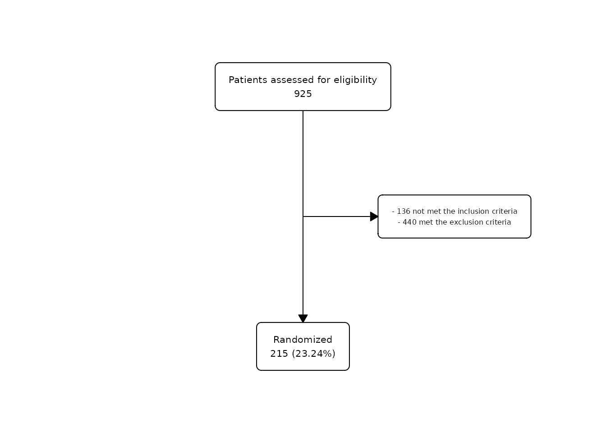
Combine
fc_merge() and fc_stack() allow you to
combine different flowcharts horizontally or vertically. This is very
useful when you need to combine flowcharts generated from different
dataframes, as shown here.
Merge
We can combine different flowcharts horizontally using
fc_merge(). For example, we might want to represent the
flow of patients included in the ITT population with the flow of
patients included in the PP population.
# Create first flowchart for ITT
fc1 <- safo |>
as_fc(label = "Patients assessed for eligibility") |>
fc_filter(itt == "Yes", label = "Intention to treat (ITT)")
fc_draw(fc1)
# Create second flowchart for visits
fc2 <- safo |>
as_fc(label = "Patients assessed for eligibility") |>
fc_filter(pp == "Yes", label = "Per protocol (PP)")
fc_draw(fc2)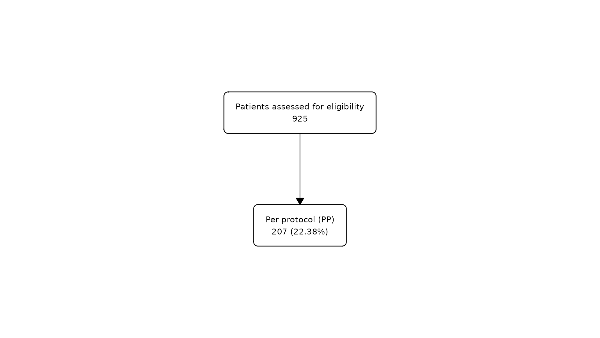
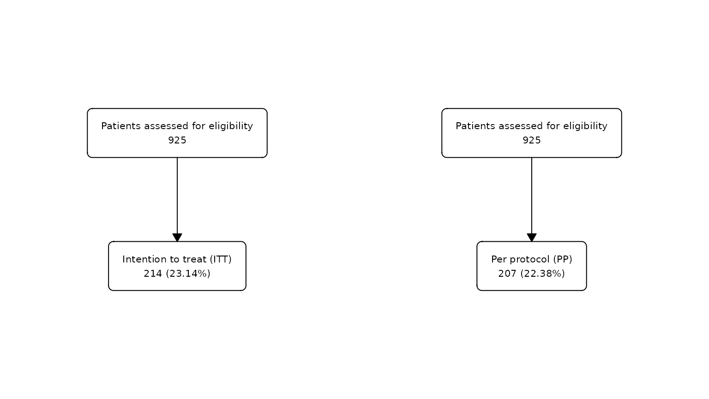
Stack
We can combine different flowcharts vertically using
fc_stack(). For example, we can combine the same two
flowcharts vertically instead of horizontally.
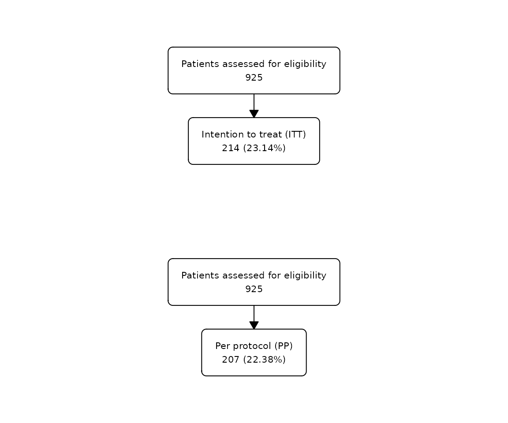
We can use the argument unite = TRUE to connect two
stacked flowcharts. For example:
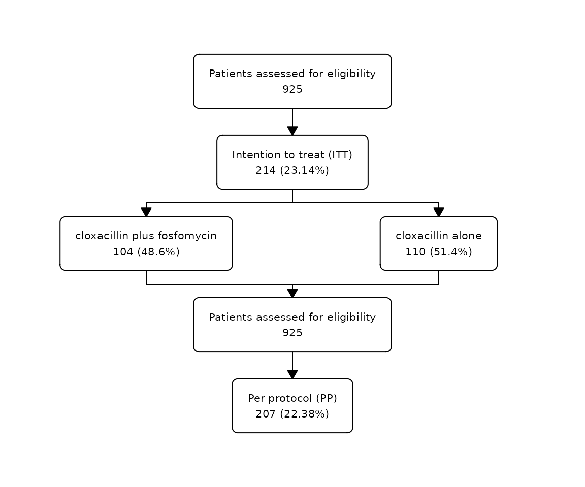
Export
Once the flowchart has been drawn we can export it to the most
popular image formats, including both bitmap (png, jpeg, tiff, bmp) and
vector (svg, pdf) formats, using fc_export():
safo |>
as_fc(label = "Patients assessed for eligibility") |>
fc_filter(!is.na(group), label = "Randomized", show_exc = TRUE) |>
fc_draw() |>
fc_export("flowchart.png")We can change the size and resolution of the stored image.
Examples
Example 1
In this example, we will try to create a flowchart for the complete flow of patients in the SAFO study:
safo |>
as_fc(label = "Patients assessed for eligibility") |>
fc_filter(!is.na(group), label = "Randomized", show_exc = TRUE) |>
fc_split(group) |>
fc_filter(itt == "Yes", label = "Included in ITT") |>
fc_filter(pp == "Yes", label = "Included in PP") |>
fc_draw()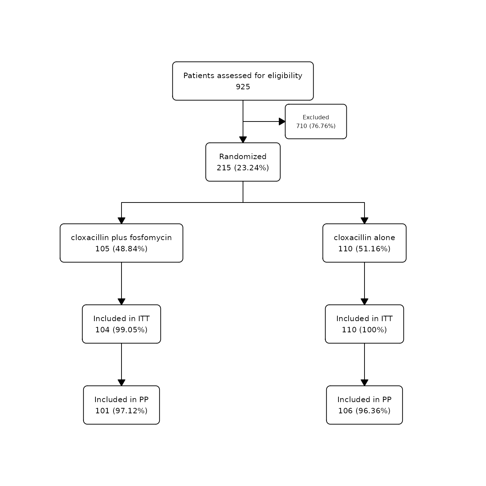
Example 2
In this example, we will try to exactly reproduce the original flowchart of the SAFO study published in Nature Medicine: SAFO flowchart.
First, we need to do some pre-processing to reproduce the text in the larger boxes:
# Create labels for exclusion box:
label_exc <- paste(
c(str_glue("{sum(safo$inclusion_crit == 'Yes' | safo$exclusion_crit == 'Yes' | safo$decline_part == 'Yes', na.rm = T)} excluded:"),
map_chr(c("inclusion_crit", "decline_part", "exclusion_crit"), ~str_glue("{sum(safo[[.x]] == 'Yes', na.rm = TRUE)} {attr(safo[[.x]], 'label')}")),
map_chr(4:15, ~str_glue(" - {sum(safo[[.x]] == 'Yes')} {attr(safo[[.x]], 'label')}"))),
collapse = "\n")
label_exc <- gsub("exclusion criteria", "exclusion criteria:", label_exc)
safo1 <- safo |>
filter(group == "cloxacillin alone", !is.na(reason_pp)) |>
mutate(reason_pp = droplevels(reason_pp))
label_exc1 <- paste(
c(str_glue("{nrow(safo1)} excluded:"),
map_chr(levels(safo1$reason_pp), ~str_glue(" - {sum(safo1$reason_pp == .x)} {.x}"))),
collapse = "\n")
label_exc1 <- str_replace_all(label_exc1, c("resistant" = "resistant\n", "blood" = "blood\n"))
safo2 <- safo |>
filter(group == "cloxacillin plus fosfomycin", !is.na(reason_pp)) |>
mutate(reason_pp = droplevels(reason_pp))
label_exc2 <- paste(
c(str_glue("{nrow(safo2)} excluded:"),
map_chr(levels(safo2$reason_pp), ~str_glue(" - {sum(safo2$reason_pp == .x)} {.x}"))),
collapse = "\n")
label_exc2 <- str_replace_all(label_exc2, c("nosocomial" = "nosocomial\n", "treatment" = "treatment\n"))Second, let’s create and customise the flowchart using the functions in the package:
safo |>
as_fc(label = "patients assessed for eligibility", text_pattern = "{n} {label}") |>
fc_filter(!is.na(group), label = "randomized", text_pattern = "{n} {label}", show_exc = TRUE,
just_exc = "left", text_pattern_exc = "{label}", label_exc = label_exc, text_fs_exc = 7) |>
fc_split(group, text_pattern = "{n} asssigned\n {label}") |>
fc_filter(itt == "Yes", label = "included in intention-to-treat\n population", show_exc = TRUE,
text_pattern = "{n} {label}",
label_exc = "patient did not receive allocated\n treatment (withdrew consent)",
text_pattern_exc = "{n} {label}", text_fs_exc = 7) |>
fc_filter(pp == "Yes", label = "included in per-protocol\n population", show_exc = TRUE,
just_exc = "left", text_pattern = "{n} {label}", text_fs_exc = 7) |>
fc_modify(
~.x |>
filter(n != 0) |>
mutate(
text = case_when(id == 11 ~ label_exc1, id == 13 ~ label_exc2, TRUE ~ text),
x = case_when(id == 3 ~ x + 0.15, id %in% c(11, 13) ~ x + 0.01, TRUE ~ x),
y = case_when(id %in% c(1, 3) ~ y + 0.05, id >= 2 ~ y - 0.05, TRUE ~ y)
)
) |>
fc_draw()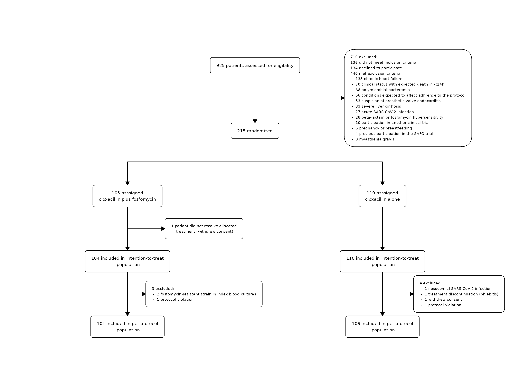
Example 3
In this example, we will create a flowchart without any dataframe,
using the N = argument to manually specify the numbers to
display in the boxes:
as_fc(N = 300) |>
fc_filter(N = 240, label = "Randomized patients", show_exc = TRUE) |>
fc_split(N = c(100, 80, 60), label = c("Group A", "Group B", "Group C")) |>
fc_filter(N = c(80, 75, 50), label = "Finished the study") |>
fc_draw()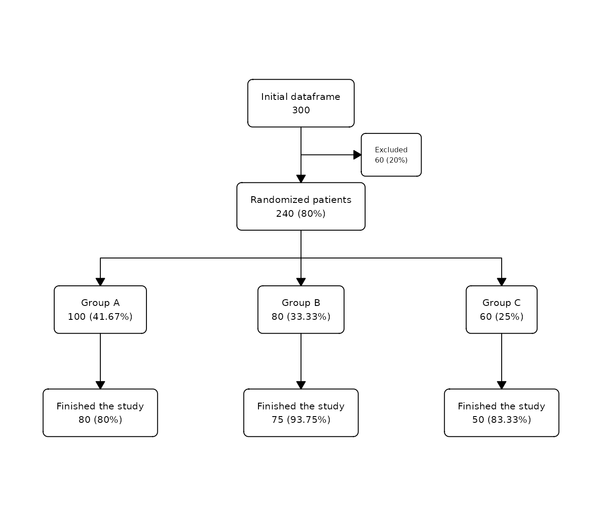
Customization examples
In this examples, we will explore some of the arguments to customize the following flowchart:
safo |>
as_fc(label = "Patients assessed for eligibility") |>
fc_filter(!is.na(group), label = "Randomized", show_exc = TRUE) |>
fc_split(group) |>
fc_draw()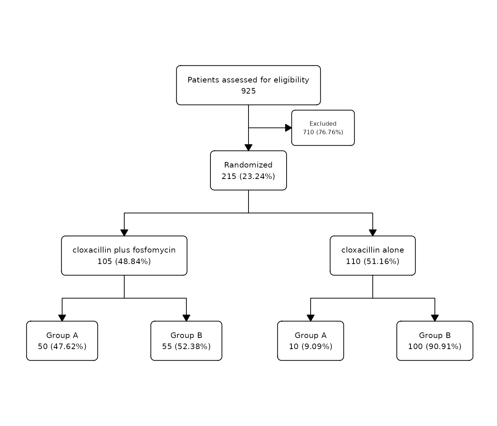
Add a title to the flowchart
We can add a title to the flowchart using the argument
title= in the fc_draw() function:
safo |>
as_fc(label = "Patients assessed for eligibility") |>
fc_filter(!is.na(group), label = "Randomized", show_exc = TRUE) |>
fc_split(group) |>
fc_draw(title = "SAFO flowchart")
Add a title to the split
We can also add a title to a split in the flowchart, using the
argument title in the fc_split() function:
safo |>
as_fc(label = "Patients assessed for eligibility") |>
fc_filter(!is.na(group), label = "Randomized", show_exc = TRUE, perc_total = TRUE) |>
fc_split(group, perc_total = TRUE, title = "Treatment", bg_fill_title = "skyblue") |>
fc_draw()
Percentage with respect to the total rows
We can change the calculation of all percentages in a flowchart. By
default, percentages are calculated with respect to the box in the
previous level. With the argument perc_total= we can change
it, to calculate it with respect to the initial box with the total
number of rows:
safo |>
as_fc(label = "Patients assessed for eligibility") |>
fc_filter(!is.na(group), label = "Randomized", show_exc = TRUE, perc_total = TRUE) |>
fc_split(group, perc_total = TRUE) |>
fc_draw()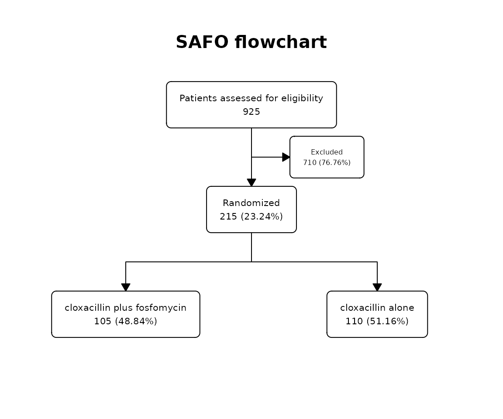
Offset
We can add/remove space to the distance between boxes in a split
using the argument offset:
safo |>
as_fc(label = "Patients assessed for eligibility") |>
fc_filter(!is.na(group), label = "Randomized", show_exc = TRUE, perc_total = TRUE) |>
fc_split(group, offset = 0.1) |>
fc_draw()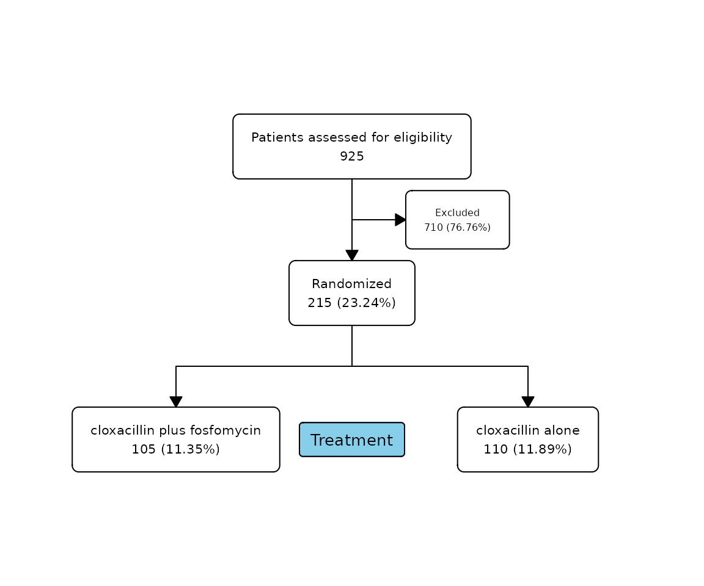
safo |>
as_fc(label = "Patients assessed for eligibility") |>
fc_filter(!is.na(group), label = "Randomized", show_exc = TRUE, perc_total = TRUE) |>
fc_split(group, offset = -0.1) |>
fc_draw()We can also add/remove space to the distance between the excluded box
in a filter using the argument offset_exc:
safo |>
as_fc(label = "Patients assessed for eligibility") |>
fc_filter(!is.na(group), label = "Randomized", show_exc = TRUE, offset_exc = 0.1) |>
fc_split(group) |>
fc_draw()
Change Box Corner Style
We can change the corner style of the flowchart boxes using the
box_corners argument with fc_draw:
safo |>
as_fc(label = "Patients assessed for eligibility") |>
fc_filter(!is.na(group), label = "Randomized", show_exc = TRUE) |>
fc_split(group) |>
fc_draw(box_corners = "sharp")
Split in one group
We can perform an additional split only in one of the groups using
the argument sel_group:
safo |>
as_fc(label = "Patients assessed for eligibility") |>
fc_filter(!is.na(group), label = "Randomized", show_exc = TRUE) |>
fc_split(group) |>
fc_split(N = c(50, 60), sel_group = "cloxacillin alone") |>
fc_draw()